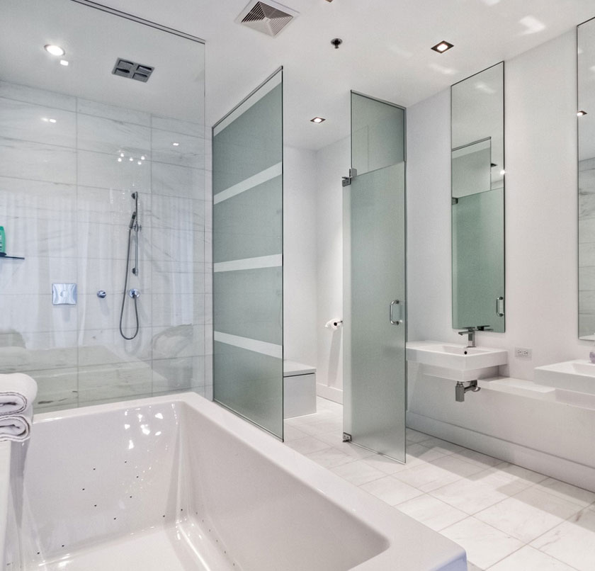
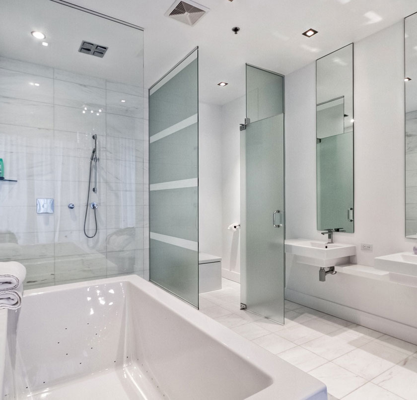
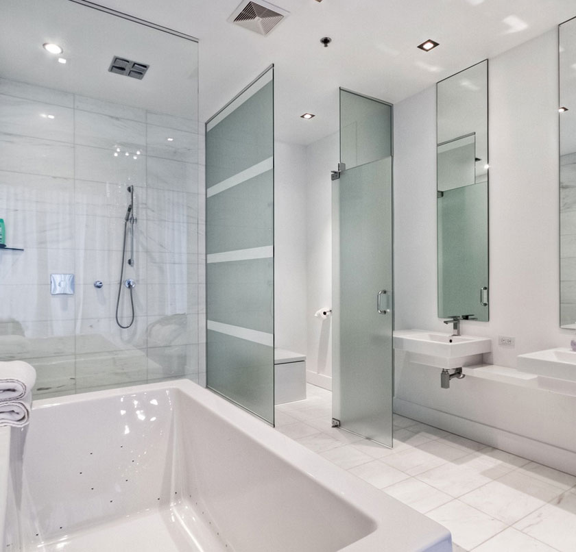
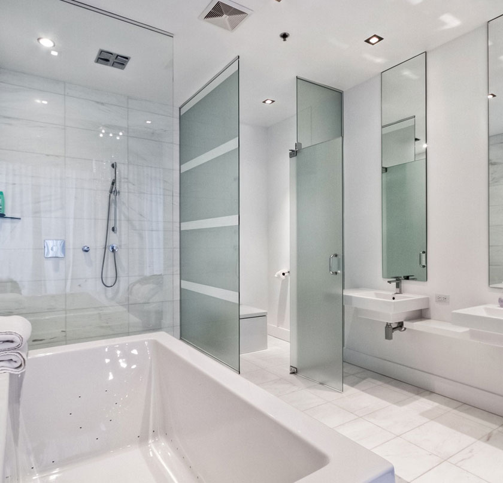
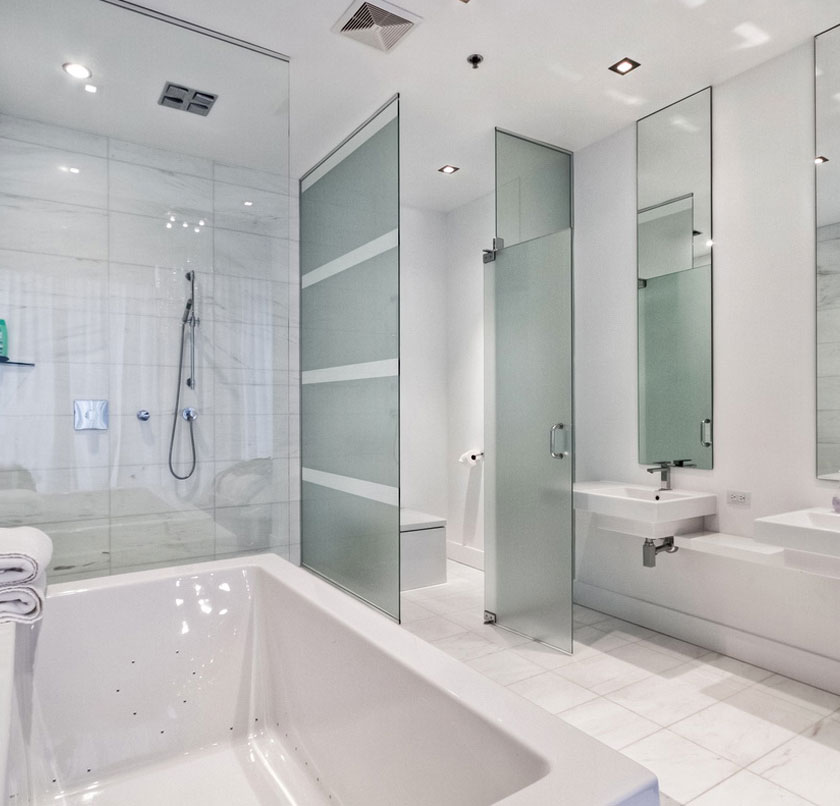

Derrig & Talbot a été fondé par Marc Talbot et Ryan Derrig. Avant la fondation de Derrig & Talbot, Ryan Derrig était entrepreneur général avec une expérience de près de 10 ans. Avant sa recontre avec Ryan, Marc Talbot évoluait comme constructeur de maisons et desginer. Ils se sont joints en 2013 pour créer Derrig & Talbot dans le but de créer une compagnie se spécialisant dans les projets design-construction clé en main.
Derrig & Talbot est composé d’une équipe multidisciplinaire de gérants de projets, d’ébénistes, de peintres, d’électriciens, de plombiers, de desginers etc.
